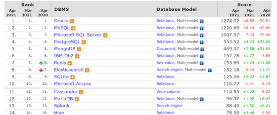
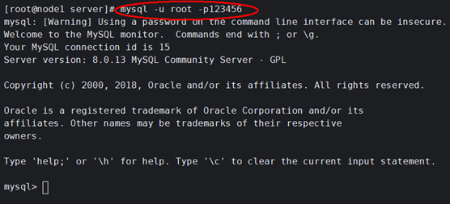
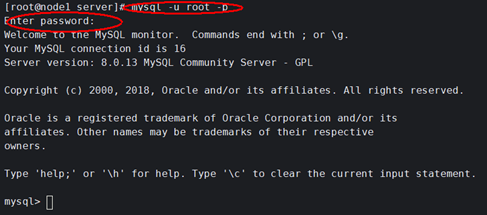
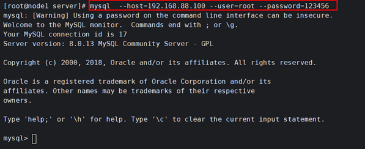
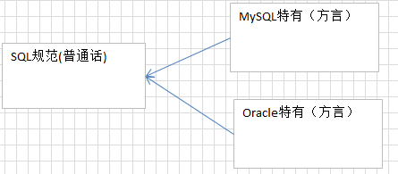
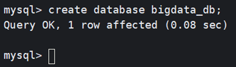
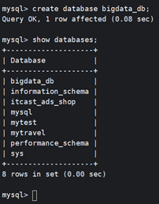
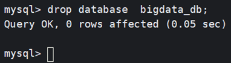
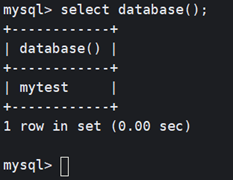

1 MySQL基础I¶
1.数据库介绍¶
1.1.数据库概述¶
数据库就是存储数据的仓库，其本质是一个文件系统，数据按照特定的格式将数据存储起来，用户可以对数据库中的数据进行增加，修改，删除及查询操作。
随着互联网的高速发展，大量的数据在不断的产生，伴随而来的是如何高效安全的存储数据和操作数据，而这一问题成为了信息时代的一个非常大的问题。
使用数据库可以高效的有条理的储存数据：
- 可以结构化存储大量的数据，
2、可以有效的保持数据的一致性、完整性。
1.2.常见数据库¶
数据库又分为关系型数据库和非关系型数据库
| 数据库类型 | 数据库 | 介绍 |
|---|---|---|
| 关系型数据库 | MySQL | 开源免费的数据库，中型的数据库.已经被Oracle收购了.MySQL6.x版本也开始收费。Mariadb免费摄取版 |
| Oracle | 收费的大型数据库，Oracle公司的产品。Oracle收购SUN公司，收购MySQL。 | |
| DB2 | IBM公司的数据库产品,收费的。常应用在银行系统中. | |
| SQLServer | MicroSoft 公司收费的中型的数据库。C#、.net等语言常使用。 | |
| SQLite | 嵌入式的小型数据库，应用在手机端。 | |
| 非关系型数据库 | Redis | 是一个小而美的数据库，主要用在key-value 的内存缓存，读写性能极佳 |
| HBase | HBase是列式数据库，目标是高效存储大量数据 | |
| MongoDB | MongoDB是文档型数据库，非常接近关系型数据库的。 |
常用数据库：MySQL，Oracle，Redis，HBase
数据库排行榜 ：

1.3.数据库的特点¶
- 持久化存储
- 读写速度极高
- 保证数据的有效性
2.MySQL数据库安装和使用¶
2.1.MySQL安装¶
**课程提供的Linux系统中已经安装好了MySQL，可直接使用，安装文档请查看**MySQL8.0安装.md。
2.2.登录MySQL数据库¶
MySQL是一个需要账户名密码登录的数据库，登陆后使用，它提供了一个默认的root账号，使用安装时设置的密码即可登录，有两种登录方式。
方式1:
| MySQL -u用户名 -p密码 |
|---|

或者
| MySQL -u用户名 -p 回车输入密码 |
|---|

方式2:
MySQL --host=ip地址 --user=用户名 --password=密码

3.SQL语句¶
3.1.SQL语句介绍¶
结构化查询语言(Structured Query Language)简称SQL，是关系型数据库管理系统都需要遵循的规范，是数据库认识的语句。不同的数据库生产厂商都支持SQL语句，但都有特有内容。
普通话：各数据库厂商都遵循的ISO标准。
方言：数据库特有的关键字。

3.2.SQL语句分类¶
- SQL分类：
- 数据定义语言：简称DDL(Data Definition Language)，用来定义数据库对象：数据库，表，列等。关键字：create，alter，drop等
- 数据操作语言：简称DML(Data Manipulation Language)，用来对数据库中表的记录进行更新。关键字：insert，delete，update等
- 数据控制语言：简称DCL(Data Control Language)，用来定义数据库的访问权限和安全级别，及创建用户。
- 数据查询语言：简称DQL(Data Query Language)，用来查询数据库中表的记录。关键字：select，from，where等.
3.3.SQL通用语法¶
- SQL语句可以单行或多行书写，以分号结尾
- 可使用空格和缩进来增强语句的可读性
- MySQL数据库的SQL语句不区分大小写，关键字建议使用大写
例如：SELECT * FROM user。
- 同样可以使用/**/的方式完成注释 -- #
- MySQL中的我们常使用的数据类型如下
| 分类 | 类型名称 | 说明 |
|---|---|---|
| 整数类型 | tinyInt (255) -128~127 | 很小的整数 UNSIGN |
| smallint(65535) | 小的整数 | |
| Mediumint(16777215) | 中等大小的整数 | |
| int(integer)（4294967295） | 普通大小的整数 | |
| Bigint | 大整数 | |
| 小数类型 | float | 单精度浮点数 |
| double | 双精度浮点数 | |
| Decimal(m,d) | 压缩严格的定点数 decimal(10,2) | |
| 日期类型 | year | YYYY 1901~2155 |
| time | HH:MM:SS -838:59:59~838:59:59 | |
| date | YYYY-MM-DD 1000-01-01~9999-12-3 | |
| datetime | YYYY-MM-DD HH:MM:SS 1000-01-01 00:00:00~ 9999-12-31 23:59:59 | |
| timestamp | YYYY-MM-DD HH:MM:SS 19700101 00:00:01 UTC~2038-01-19 03:14:07UTC | |
| 文本、二进制类型 | char(m) | m为0~255之间的整数定长 char(10) tom |
| varchar(m) | m为0~65535之间的整数变长 varchar(10) tom | |
| tinyblob | 允许长度0~255字节 | |
| blob | 允许长度0~65535字节 | |
| mediumblob | 允许长度0~167772150字节 | |
| longblob | 允许长度0~4294967295字节 | |
| tinytext | 允许长度0~255字节 | |
| text | 允许长度0~65535字节 | |
| mediumtext | 允许长度0~167772150字节 | |
| longtext | 允许长度0~4294967295字节 | |
| varbinary(m) | 允许长度0~M个字节的变长字节字符串 | |
| binary(m) | 允许长度0~m个字节的定长字节字符串 |
4.DDL之数据库操作：database¶
4.1.创建数据库¶
格式:
create database 数据库名; #直接创建数据库，如果存在则报错(参看官网)
create database if not exists bigdata_db; #如果数据库不存在则创建
create database 数据库名 character set 字符集; #创建数据库时设置字符集
示例：
create database bigdata_db;

4.2.查看MySQL服务器中的所有的数据库:¶
show databases;

4.3.删除数据库¶
格式：
drop database 数据库名称
示例:
drop database bigdata_db;

4.4.使用数据库¶
- 选择数据库
格式:
use 数据库名字
示例:
use bigdata_db;
查看正在使用的数据库:
select database();

5.DDL之表操作：table¶
5.1.创建表¶
5.1.1.常规创建表¶
- 格式：
create table if not exists 表名(
字段名 类型(长度) [约束],
字段名 类型(长度) [约束],
...
);
类型：
varchar(n) 字符串
int 整型
double 浮点
date 时间
timestamp 时间戳
约束：
primary key 主键，被主键修饰字段中的数据，不能重复、不能为null。
示例:
###创建分类表
CREATE TABLE category (
cid varchar(20) primary key,#分类ID
cname VARCHAR(100) #分类名称
);
5.1.2.克隆表结构¶
格式：
CREATE TABLE new_table LIKE source_table
#创建和分类表结构相同的分类表副本表
CREATE TABLE category_backup LIKE category;
验证表结构：
SHOW CREATE TABLE category_backup\G
5.2.查看表¶
- 查看数据库中的所有表：
格式
show tables;
- 查看表结构：
格式：
desc 表名;
#例如：
desc sort;
5.3.删除表¶
- 格式：drop table 表名;
示例:
drop table category;
5.4.修改表结构格式¶
- alter table 表名 add 列名 类型(长度) [约束];
作用：修改表添加列.
例如：
#为分类表添加一个新的字段为分类描述 varchar(20)
ALTER TABLE category ADD `desc` VARCHAR(20);
- alter table 表名 change 旧列名 新列名 类型(长度) 约束;
作用：修改表修改列名.
例如：
#为分类表的分类描述字段更换为description varchar(30)
ALTER TABLE category CHANGE `desc` description VARCHAR(30);
- alter table 表名 drop 列名;
作用：修改表删除列.
例如：
#删除分类表中description这列
ALTER TABLE category DROP description;
- rename table 表名 to 新表名;
作用：修改表名
例如：
#为分类表category改名成 category2
RENAME TABLE `category` TO category2;